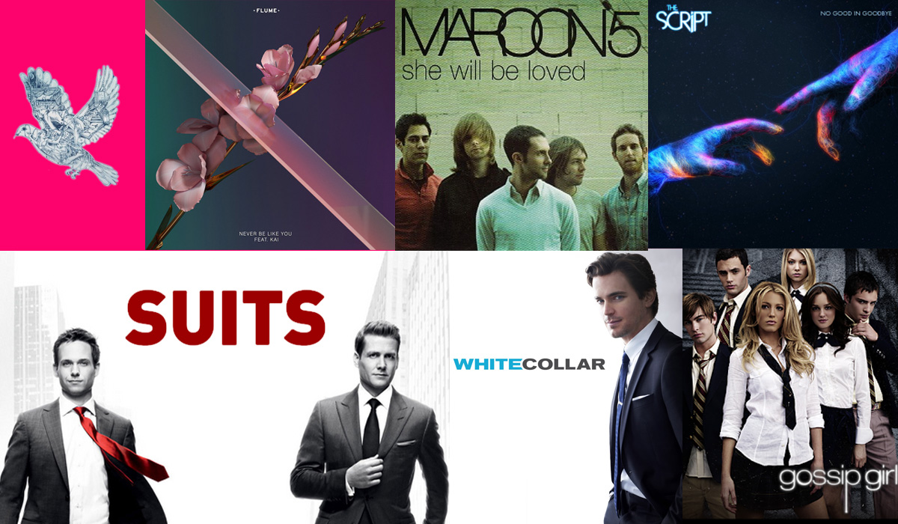

TV Shows & Music
"Where words fail, music speaks." ~Hans Christian Andersen
Mitali enjoys listening to music and watching TV shows in her free time.
Her top ten artists and their songs are:
- Coldplay: Magic
- The Script: No good in goodbye
- Maroon 5: She will be loved
- Flume: Never be like you
- Kygo: Firestone
Her favorite TV Shows are:
- Suits
- White Collar
- Breaking Bad
- Gossip Girl
Homepage
Back to interview homepage
Page1- About her
Page2- Zodiac Sign Libra
Page3- Travel
Page4- Desserts
Page5- Life Before New York
Page6- Love For Nature
Page7- Sports & Adventure
Page8- Dogs
Page9- Art